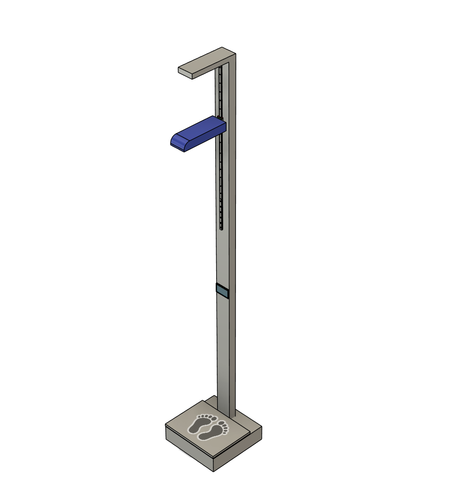
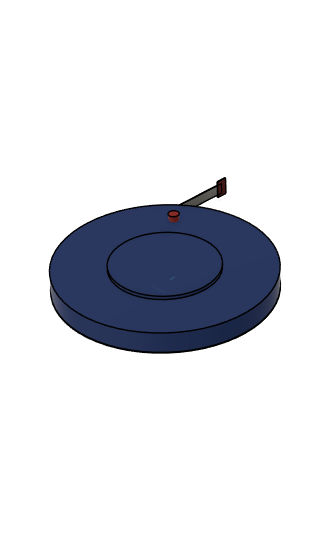
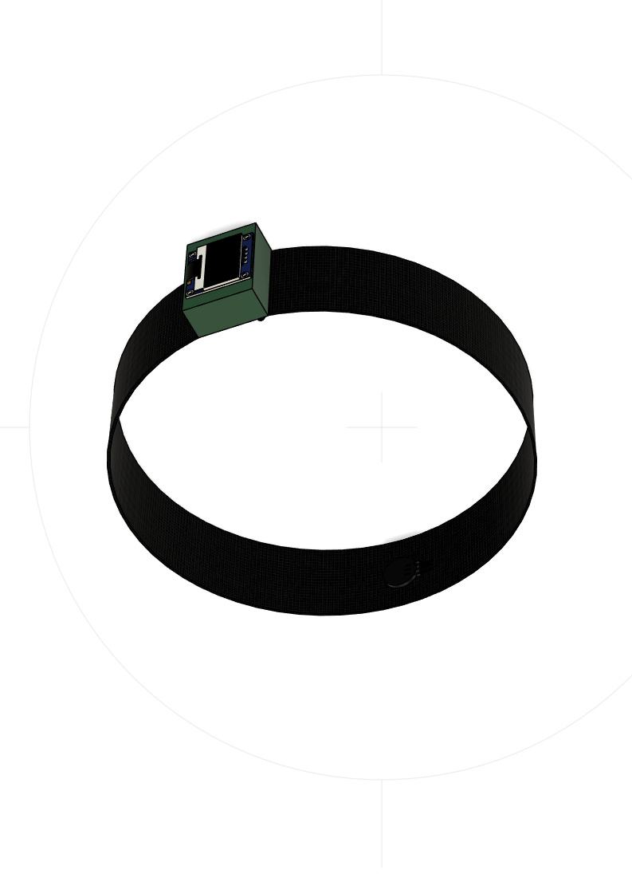

Timbangan dan Pengukur Tinggi Badan
Menggunakan sensor ultrasonic HC-SR04 dan sensor loadcell yang
terintegrasi IoT melalui ESP32

Pengukur Lingkar Lengan Atas
Menggunakan sensor rotary encoder yang mengubah pulsa putaran
menjadi panjang lingkar lengan dan terintegrasi IoT dengan ESP32

Gelang Pemandu Pernapasan
Menggunakan pulse sensor untuk mendeteksi denyut nadi dan
menampilkan panduan pernapasan melalui layar OLED dengan Arduino